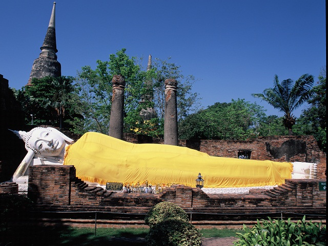

วัดใหญ่ชัยมงคล

ประวัติ
รายนามผู้บริหารวัดใหญ่ชัยมงคล
แผนที่และการเดินทางสู่ วัดใหญ่ชัยมงคล
ประวัติ
วัดใหญ่ชัยมงคล เดิมชื่อ "วัดป่าแก้ว" หรือ "วัดเจ้าไท" ตั้งอยู่ทางทิศตะวันออกเฉียงใต้ของเกาะพระนคร ปัจจุบันเป็นพื้นที่ตำบลคลองสวนพลู อำเภอพระนครศรีอยุธยา จังหวัดพระนครศรีอยุธยา จุดเด่นของวัดได้แก่เจดีย์องค์ใหญ่ที่เชื่อกันว่า ได้รับการปฏิสังขรณ์ขึ้นใหม่ในสมัยสมเด็จพระนเรศวรมหาราช ที่ภายในได้มีการค้นพบชัยมงคลคาถาบรรจุอยู่ ภายในพระอุโบสถ เป็นที่ประดิษฐานพระพุทธชัยมงคล พระประธานที่เป็นสิ่งศักดิ์สิทธิ์ของวัด นอกจากนี้แล้ว ภายในวัดยังเป็นที่ประดิษฐานศาลสมเด็จพระนเรศวรมหาราช สร้างขึ้นเมื่อ พ.ศ. 1900 เป็นที่พำนักของพระภิกษุคณะป่าแก้ว ซึ่งมี สมเด็จพระวันรัตน์เป็นประธานสงฆ์ จึงได้ชื่อว่า วัดเจ้าพระยาไทยคณะป่าแก้ว สันนิษฐานว่าเป็นที่กระทำการเสี่ยงเทียน ในคราวก่อนที่พระเฑียรราชาจะทรงปราบดาภิเษก ยึดอำนาจจากขุนวรวงศาธิราชและท้าวศรีสุดาจันทร์ ในรัชกาลของสมเด็จพระนเรศวรมหาราช เป็นที่พำนักของ สมเด็จพระวันรัตน์ ผู้เป็นพระเถระที่สมเด็จพระนเรศวรทรงให้ความเคารพ ในคราวที่ทรงกระทำยุทธหัตถี ชนะพระมหาอุปราชของหงสาวดี สมเด็จพระนเรศวรมหาราชทรงพระพิโรธต่อบรรดาแม่ทัพนายกองที่ตามทัพไม่ทัน ทรงดำริจะลงพระราชอาญาประหารชีวิต แต่สมเด็จพระวันรัตน์ได้ทูลขอพระราชทานชีวิตของแม่ทัพนายกองเหล่านั้นไว้ โดยยกเอาพุทธประวัติตอนที่เจ้าชายสิทธัตถะบำเพ็ญเพียรอยู่ใต้ต้นโพธิ์ ก่อนที่จะตรัสรู้เป็นพระพุทธเจ้า ต้องผจญมารอยู่โดยลำพัง เปรียบเสมือนกับสมเด็จพระนเรศวรที่ต้องทรงกระทำยุทธหัตถีโดยลำพัง และได้ทูลแนะนำให้ทรงสร้างเจดีย์ใหญ่ขึ้นแทนการประหารชีวิต สมเด็จพระนเรศวรทรงเห็นด้วยและทรงให้สร้างพระเจดีย์ใหญ่ขึ้น ชื่อว่า "พระเจดีย์ชัยมงคล" ประมาณ พ.ศ. 2135 มีความสูง 1 เส้น 1 วา เป็นเจดีย์ ที่สูงที่สุดในจังหวัดพระนครศรีอยุธยามาจนทุกวันนี้
รายนามผู้บริหารวัดใหญ่ชัยมงคล
เจ้าอาวาส
ผู้ช่วยเจ้าอาวาส
หัวหน้าสำนักแม่ชี
ไวยาวัจกร
รายนามผู้บริหารวัดใหญ่ชัยมงคล
พระครูสิริชัยมงคล (สำรอง ชยธมฺโม)
พระมหาบรรณ์ ปญฺญาธโร
แม่ชีสมจิต ควรเลี้ยง
นายปรีชา มีวุฒิสม
แผนที่และการเดินทางสู่ วัดใหญ่ชัยมงคล
ที่ตั้ง
ติดต่อ
เวลาท่องเที่ยว
40/3 หมู่ที่ 3 ตำบลคลองสวนพลู อำเภอพระนครศรีอยุธยา จังหวัดพระนครศรีอยุธยา
035-244193
เปิดทุกวัน เวลา 08.00 – 17.00 น.
ราชวงศ์อู่ทอง
เป็นชื่อสมมุติที่นักประวัติศาสตร์ใช้เรียกราชวงศ์แรกที่ปกครองกรุงศรีอยุธยา เพื่อความสะดวกในการศึกษาประวัติศาสตร์กรุงศรีอยุธยา
ราชวงศ์สุพรรณภูมิ
ราชวงศ์สุวรรณภูมิ เป็นราชวงศ์ที่ 2 ที่ได้ครองอาณาจักรอยุธยา ราชวงศ์สุพรรณภูมิมีอายุรวม 199 ปี
ราชวงศ์สุโขทัย
เป็นราชวงศ์ที่ 3 ที่ปกครองกรุงศรีอยุธยา แทนที่ราชวงศ์สุพรรณภูมิที่สิ้นอำนาจไปหลังจากการเสียกรุงศรีอยุธยาครั้งที่หนึ่ง โดยพระเจ้าบุเรงนองกรุงหงสาวดีทรงสถาปนา
ราชวงศ์ปราสาททอง
เป็นราชวงศ์ที่ 4 ครองอาณาจักรอยุธยาเป็นเวลา 59 ปี (พ.ศ. 2172 - พ.ศ. 2231) มีชื่อตามพระนามของสมเด็จพระเจ้าปราสาททอง ผู้สถาปนาราชวงศ์ด้วยการยึดอำนาจจากสมเด็จพระอาทิตยวงศ์
ราชวงศ์บ้านพลูหลวง
เป็นราชวงศ์ที่ 5 และเป็นราชวงศ์สุดท้ายที่ปกครองอาณาจักรอยุธยาก่อนการเสียกรุงศรีอยุธยาครั้งที่สอง ในปี พ.ศ. 2310 มีพระมหากษัตริย์ในราชวงศ์ทั้งสิ้น 6 พระองค์
ติดต่อ
fackbook: natthachai charensuk
line: natwillflax
Back to top